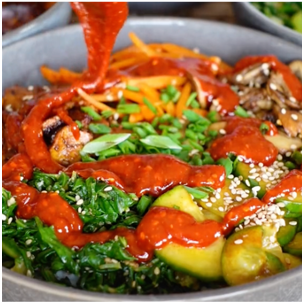

Bibimbap

Bibimbap - A traditional Korean dish using a mix of vegetables over rice
One of the first dishes I made with Cynthia when living on Beethoven street.
Although the first time it took us almost 3 hours to make.
We've refined our process to make it much quicker.
We often choose to go heavier on the veggies than listed
Ingredients
- rice
- 3 large carrots (Optionally more)
- 400mg of shittake mushrooms
- 200mg of spinach or bok choi
- 1 tbsp avocado or olive oil for frying
Cucumber Salad
- 1 cucumber
- 1 tbsp soy sauce
- 1 tbsp agave
- 2 tbsp vinegar
- 1 tbsp chli flakes
Tofu
- 1 block of tofu
- 1 tbsp sesame oil
- 2 tbsp soy sauce
- 2 cloves minced garlic
Sauce
- 2 tbsp gochujang
- 1 tbsp water
- 1 tbsp sesame oil
- 1 tbsp sugar
- 1 tsp vinegar
- 1/2 tsp garlic poweder
- 1 tbsp sesame seeds
Steps
- Prepare rice of your choice, making sure to wash
- Mix sesame oil, soy sauce, and minced garlic in a container
- Thinly slice tofu and place in marinade. Shake and place in fridge for 30 minutes
- Shred carrots, slice mushrooms, slice leafy greens
- Heat frying oil in a pan
- Sautee each of the vegetables separate from the others. Season with salt and pepper
- Fry tofu, flipping to make sure each side is golden brown
- While tofu is frying, mix gochujang, water, sesame oil, sugar, vinegar, garlic powder, and seasame seeds to make sauce
- combine all ingredients in a bowl and enjoy